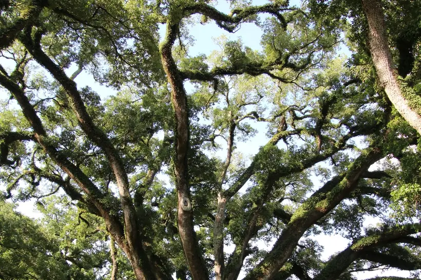

Call for anything urgent. Use the form for estimates, scheduling and questions — it reaches us directly and we answer the same day during business hours.
Call (409) 255-0582
Storm and emergency calls are answered outside business hours during hurricane season, June 1 through November 30.
Monday through Friday, 8:00am to 6:00pm.
Saturday by appointment.
Emergency response as needed after a storm.
All of Galveston Island — 77550, 77551 and 77554 — including the East End Historical District, the Silk Stocking District, Lost Bayou, Denver Court, Cedar Lawn, Fish Village, the Seawall corridor, and the West End through Pirates Beach, Bermuda Beach, Sea Isle and Terramar. We also cover Jamaica Beach, Tiki Island, Bayou Vista, Hitchcock, La Marque, Texas City and Santa Fe on the mainland side.
1. You describe the tree. Species if you know it, roughly how tall, how close to the house, and what it is doing that worries you. A photo from your phone helps more than anything you can say.
2. We come look, at no charge. Ten to twenty minutes for most yards. We check the root flare, what is overhead, and whether the tree sits on your property or in the city right-of-way.
3. You get one written number. Cutting, rigging, cleanup and haul-off in a single price, with stump grinding listed separately so you can take it or leave it.
4. You decide. No pressure and no follow-up calls. If we think the tree can be pruned instead of removed, we will say so, even though it is the smaller invoice.
If a tree is on your roof, your car or your driveway right now, call instead. Emergency work moves ahead of everything on the schedule.
Call (409) 255-0582 for a Free Estimate